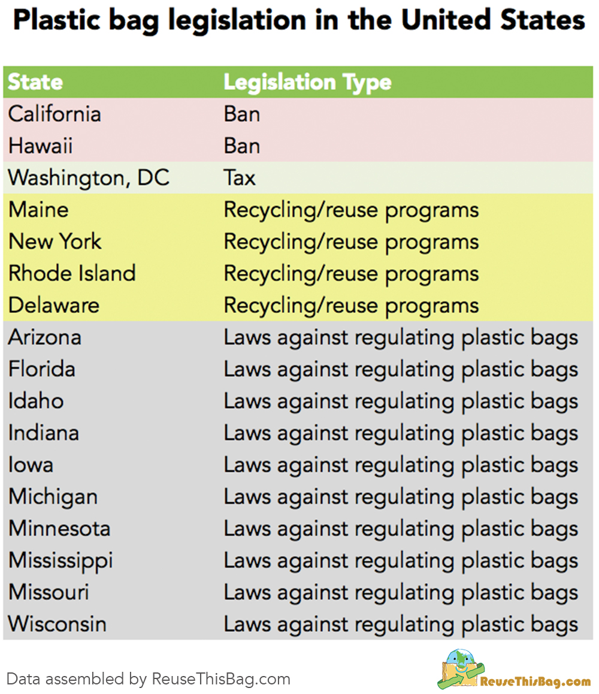
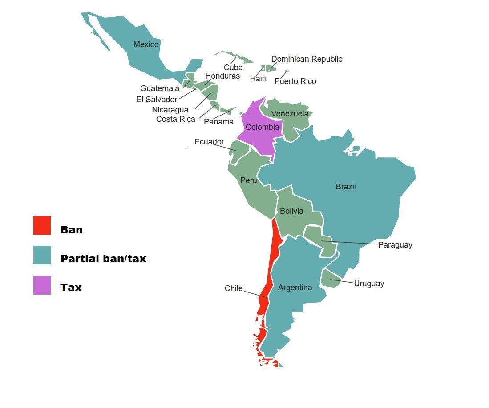
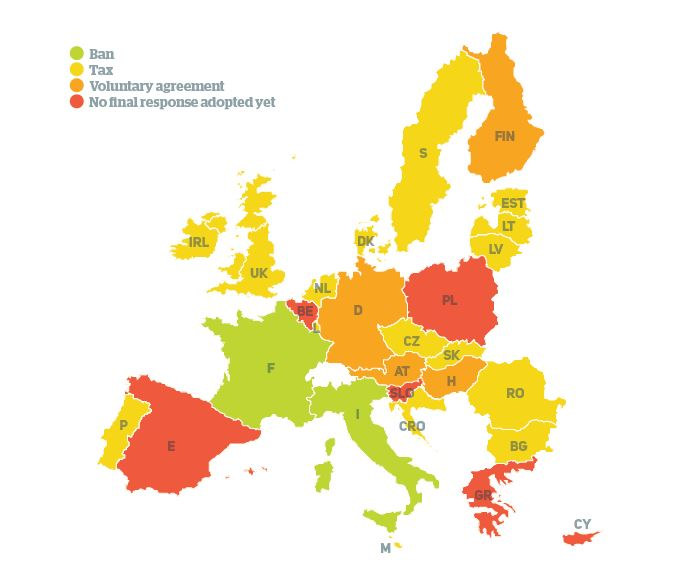
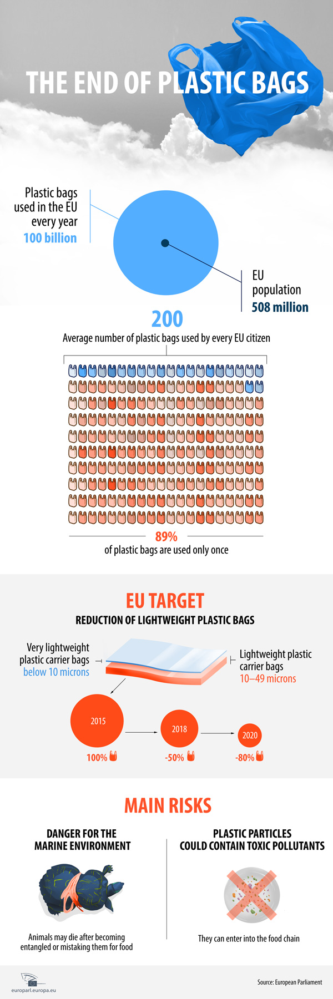
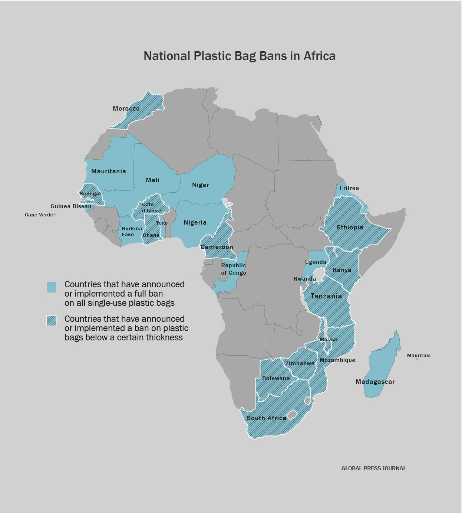

Globally, as many as 160,000 plastic bags are used every second — and currently, only 1 to 3% of them are recycled.
America is far from the most progressive country when it comes to plastic bag bans internationally.
In America, only two states have conclusively banned single-use plastic bags: Hawaii and California
In San Jose, California, for instance, a ban was put into place in 2012 — and since then, there has been an 89% reduction in plastic bags in storm drains, a 60% reduction in creeks and rivers, and a 59% drop in residential plastic waste.
San Francisco (ban enacted in 2007), the city has saved a reported $600,000 per year in plastic processing fees alone
Seattle, where bags were banned 5 years ago, residents have seen in 48% drop in residential plastic bag waste, and a 76% decline in commercial plastic bag waste. In 2010, there were 262 tons’ worth of plastic bags in landfills; by 2014, that dropped to 136 tons.
In Canada, bans on plastics have so far been left up to municipalities, and some are taking action. Both Montreal and Victoria decided to ban plastic bags in stores, with business owners subject to huge fines if caught providing these to customers.
The Canadian city of Montreal kicked off 2018 by banning single-use plastic bags.
Bans are in effect in only seven municipalities in Canada. Six are legislated (Wood Buffalo, AB; Leaf Rapids, MB; Thompson, MB; Toronto, ON [pending]; and Deux Montagnes, QC; and Hudson, QC). Tofino, BC has a voluntary ban. Two previous municipal bans have been rescinded.
Rescinded Bans
On 30 May, Chile became the first South American country to approve a nationwide ban on single-use plastic bags, garnering congratulations from around the world for its efforts to beat plastic pollution ahead of World Environment Day on 5 June.
Several other countries in Latin America and the Caribbean are using taxes, bans, and technological innovation to restrict the production and consumption of plastic bags and reduce their harmful impact on oceans and marine species.
Antigua and Barbuda was the first country in the region to ban plastic bags in 2016. Soon after, Colombia passed a similar ban, and in 2017 applied a tax to large plastic bags, while ordering changes to their design with the aim of achieving greater resistance and reusability.
For more info, visit UN Environment
EU leaders agreed there are a number of reasons to disincentivise plastic bag use. Most commonly cited was the ‘plastic soup’ that EU members said have taken to clogging up the oceans.
The Pacific Ocean is now home to a vortex of tiny plastic particles that swirl throughout the ecosystem. While some may imagine the debris to be full-form plastic objects such as disposable bags, the bits of plastic that make up the vortex actually tend to be microscopic. This is because plastic doesn’t biodegrade the way other materials do – it simply breaks down into smaller and smaller particles over time.
 For details, visit Surfrider Foundation Europe
As of August 2017, anyone in Kenya who’s found using, producing, or selling a plastic bag faces up to four years in jail, or a $38,000 fine. It’s the world’s harshest plastic bag ban, and it’s prompting some seriously creative solutions.
In July 2017, Zimbabwe announced a total ban on expanded polystyrene (EPS), a styrofoam-like material used for food containers that takes up to a million years to decompose. Those caught violating the ban have to pay a fine of between $30 and $500.
Rwanda banned them completely. Since 2008, carrying a plastic bag in the country can earn you a jail sentence — although typically offenders receive fines of about $61, according to Plastic Oceans campaign group.
Morocco, ban of plastic bag was signed into on July 1, 2016 , where 3 billion plastic bags were used every year before which estimated over 900 bags perperson every year.
In China, plastic bag waste was so bad that it led to the coining of the term “white pollution.” A full ban was adopted in 2008 — and since then, plastic bag waste has dropped by 60% to 80%, an effective reduction of some 40 billion bags. The country does, however, still face enforcement issues.
Malaysia is the eighth largest producer of mismanaged plastic wastes, almost one million tonnes of mismanaged plastic waste (waste not recycled or properly disposed of) in 2010.
To curb the problem, a ban on conventional plastic bags in favor of biodegradable and compostable plastics bags and food containers officially took effect in Malaysia’s Federal Territories – Putrajaya and Kuala Lumpur – in 2017. Selangor also eased into the idea of banning plastic bags by first encouraging plastic bag-free Saturdays. The campaign later expanded to no free plastic bags on all days. Consumers who need plastic bags are charged RM0.20 for each.
This massive city in India, home to over 20 million people, took a major step toward helping the planet when it banned all forms of single-use plastic in 2017.
A South Asian country to the east of India on the Bay of Bengal, was the first country in the world to impose a ban on plastic.In 2002, Bangladesh banned thinner plastic bags after they were found to have choked the country’s drainage system during devastating floods. This kicked off a positive domino effect, encouraging other countries such as Australia and China to follow suit.
Other countries in Asia that have bans or taxes in place include japan, Cambodia, Hong Kong and Taiwan.
Visit, Asian Correspondent for more info.
Australia as a whole doesn't have a ban on plastic bags;
however, several states and territories have begun to put bans in place in July 2018, including the Northern Territory, South Australia, and Tasmania.
Autralian major supermarkets, Coles and Woolworths have announced they will phase out single-use plastic bags by mid-2018 — to impact customers in Victoria, New South Wales, and Western Australia.
In August 2018, New Zealand Prime Minister Jacinda Ardern announced plans to phase out single-use plastic bags over the next year in order to “look after our environment and safeguard New Zealand’s clean, green reputation,” the New Zealand Herald reports.
Supermarkets were required to stop supplying single-use bags from July 1, 2019, but have implemented the change six months early.
Copyright © 2019 - Made by: Mitra, Subithira, Ira, Tasnim.